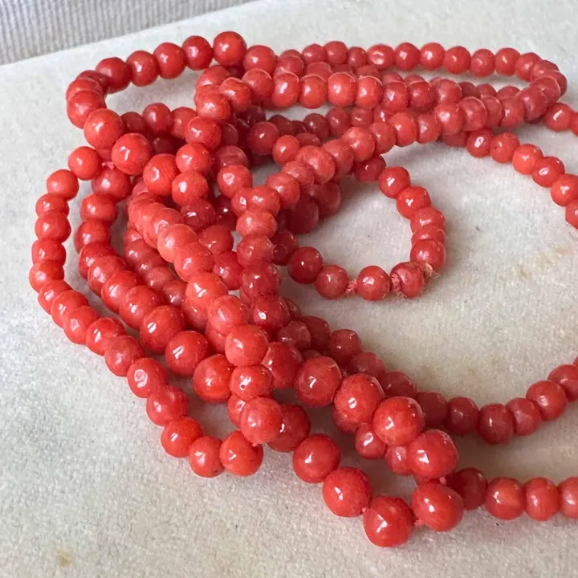

紅珊瑚：海底的千年火
紅珊瑚是海底長出的「火」——千年才長一寸，比黃金更貴的紅色傳奇。

核心定義
紅珊瑚（red coral）是珊瑚蟲分泌的碳酸鈣骨骼（方解石）化石，主要產自地中海與日本海域——因顏色豔紅、質地溫潤，被譽為「寶石級珊瑚」。硬度 3–4、比重約 2.6–2.7，主要成分碳酸鈣＋有機質。
等級體系（華人市場）：阿卡（aka，深紅、日本海域、最貴）、莫莫（momo，桃紅）、沙丁（sardinia，鮮紅、地中海）——紅度與質地決定等級。紅珊瑚生長極慢（數十年才長一釐米），是「千年一木」的海洋寶石。
特徵與分類
| 等級 | 顏色 | 產地 |
|---|---|---|
| 阿卡 aka | 深紅、血紅 | 日本、台灣 |
| 莫莫 momo | 桃紅、粉紅 | 台灣 |
| 沙丁 | 鮮紅、橘紅 | 地中海 |
| 深水珊瑚 | 粉白 | 夏威夷等 |
紅珊瑚的鑑定特徵：同心圓紋理（橫切面可見生長環）、白色軸心（珊瑚蟲基部）、顏色內深外淺（表皮色深）——染色仿品則顏色呆板、紋理不自然。珊瑚是碳酸鈣——遇酸冒泡，是身份測試。
科學原理
紅珊瑚的形成：珊瑚蟲群體在海底分泌碳酸鈣骨骼，年復一年堆積成樹狀結構——骨骼中的有機色素（類胡蘿蔔素）讓它呈紅色。生長速度：優質紅珊瑚數十年才長幾釐米——稀缺性的物理根源。
鑑定：比重 2.6–2.7（壓手）、硬度 3–4（指甲可微刮）、放大鏡看同心紋與白芯、酸測試（碳酸鈣冒泡）——染色仿品（骨粉壓制、塑料）無此特徵。珊瑚怕酸怕熱，保養要遠離汗液與清潔劑。
鑑定與鑑別方法
- 看紋理：同心圓生長紋
- 看白芯：珊瑚蟲基部白芯
- 酸測試：碳酸鈣冒泡
- 掂比重：壓手感
- 證書確認：天然/染色、等級
市場行情與保養建議
行情：阿卡紅珊瑚單克價可達數百至數千人民幣（比黃金貴數倍），莫莫與沙丁次之——「牛血紅」阿卡是收藏頂點。近年紅珊瑚因過度捕撈與保育壓力，產量銳減、價格上漲。
重要提醒：紅珊瑚涉及海洋保育（部分國家禁採/限採）——購買前務必確認來源合法與進出口許可；市場上「染色白珊瑚」「骨粉壓制」仿品多，證書是安全網。
常見誤區
深紅（阿卡）確實最貴，但「正紅、均勻、無瑕」比「一味深」重要——發黑發暗的深紅反而不如鮮亮正紅。
紅珊瑚是生物骨骼化石（碳酸鈣＋有機質）——它是「生命形成的寶石」，怕酸怕熱，保養方式與礦物寶石截然不同。
冷知識
阿卡珊瑚的極致色澤被形容為「牛血紅」——深豔而不暗，是紅色收藏的頂點。
優質紅珊瑚樹長到一尺需要數百年——你手上的紅珊瑚雕件，可能比你家房子還老。
反直覺觀點
保育壓力讓紅珊瑚價格高漲，也讓仿品與非法來源氾濫——「稀有」既是溢價來源，也是風險來源。合法、有證書，才配得上它的傳奇。
珊瑚蟲體內的類胡蘿蔔素讓骨骼呈紅——「寶石級紅」的生物本質，是珊瑚蟲的生理色素。